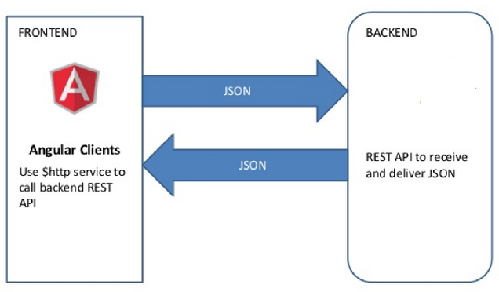
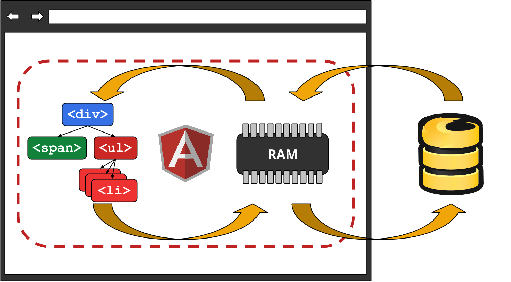

Before we look into Angulars $http Service we need to understand:
Promises

Promises
Nested Callbacks
Callbacks provide no consistency and no guaranteed call, they steal code flow when depending upon other callbacks, and they generally make debugging incredibly difficult. At every step of the way, we have to deal with explicitly handling errors.
Callback
User.get(fromId, {
success: function(err, user) {
if (err) return {error: err};
user.friends.find(toId, function(err, friend) {
if (err) return {error: err};
user.sendMessage(friend, message, callback);
});
},
failure: function(err) {
return {error: err}
}
});
Using Promises
User.get(fromId)
.then(function(user) {
return user.friends.find(toId);
}, function(err) {
// We couldn't find the user
})
.then(function(friend) {
return user.sendMessage(friend, message);
}, function(err) {
// The user's friend resulted in an error
})
.then(function(success) {
// user was sent the message
}, function(err) {
// An error occurred
});

We will connect to the backend using Angulars $http service, and with Express as the backend server
This leaves it up to us, to handle synchronization with server, i.e we have a view, with a list of users, this list will only update, next time we request data from the Server
What if we could have three way binding, that is; When data is updated in any of the three places (View, Model, or Backend), the changes propagate in real-time to the other two across all clients.
Using modern HTML5 related technologies like Web Sockets this is
possible. A number of options exist to achieve
this, with Firebase as the recommended way for Angular
We won't use this, this semester
The $http service is a core Angular service that facilitates communication with the remote HTTP servers via the browser's XMLHttpRequest object (AJAX) or via JSONP.
For unit testing we can use the $httpBackend mock (next week)
$http({method: 'GET',
url: '/someUrl'
}).then(function successCallback(response) {
// Called asynchronously when the response is available
}, function errorCallback(response) {
// called asynchronously if an error occurs or server returns an error status.
});
The response object has these properties:
{string|Object} – The response body
transformed with the transform
functions.
{number} – HTTP status code of the response.
{function([headerName])} – Header
getter function.
{Object} – The configuration object that was used to generate the request.
{string} – HTTP status text of the response.
Later we will se how Angular offers a$httpBackend mock, which allows us to test http-requests without a backend
$http.get('/someUrl', config).then(successCallback, errorCallback);
$http.post('/someUrl', data, config).then(successCallback, errorCallback);
Complete list of shortcut methods:
Clone/Fork this project unless you have it from this monday